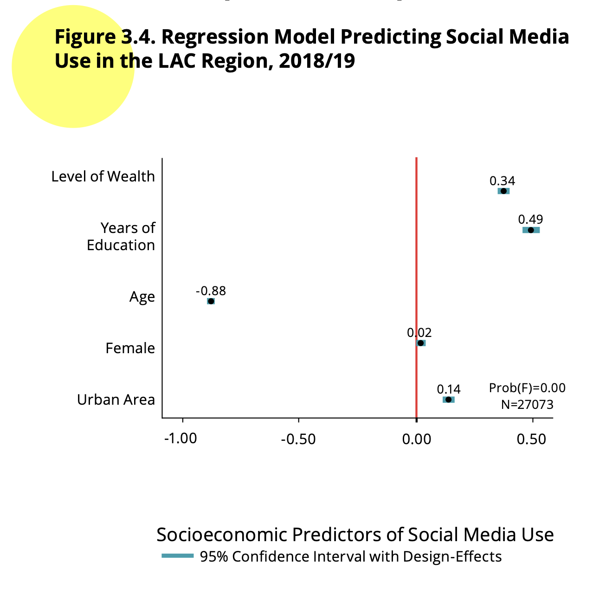
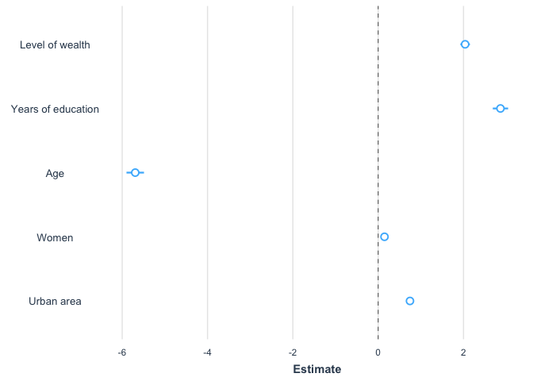
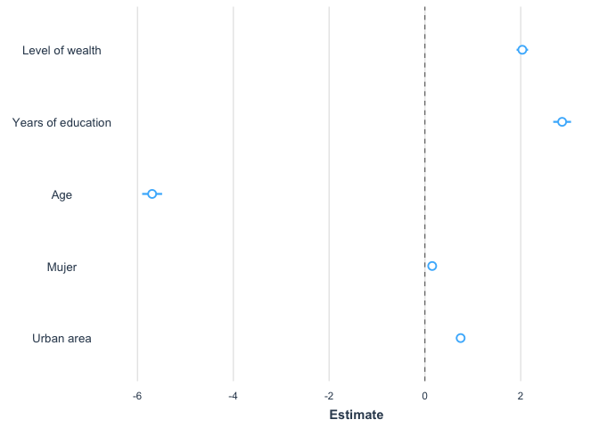

Introduction
In this section, we will see basic aspects of the logistic model to
analyze the relationship between a binary dependent variable and an
independent variable.
We continue to replicate the analysis of chapter “Social networks and
political attitudes” from the report The
Pulse of Democracy of the 2018/19 round. In this chapter, we analyze
a measure of support for democracy.
About the dataset
The data we are going to use should be cited as follows: Source:
AmericasBarometer by the Latin American Public Opinion Project (LAPOP),
wwww.LapopSurveys.org. You can download the data freely here.
It is recommended to clean the Environment before starting this
section. In this document, a database in RData format is again loaded.
This format is efficient in terms of storage space. This database is
hosted in the “materials_edu” repository of the LAPOP account on GitHub.
Using the rio library and the import command,
you can import this database from this repository, using the following
code.
library(rio)
lapop18 = import("https://raw.github.com/lapop-central/materials_edu/main/lapop18.RData")
lapop18 = subset(lapop18, pais<=35)
Determinants of use of social networks
The section about social networks presents results of a logistic
regression model in Figure 3.4. As report says, this figure “shows the
results of a logistic regression analysis that regress high use of
social media (vs. low use) on the same set of demographic and
socioeconomic factors” (p. 59).

As the report also indicates “the dependent variable, Social
Media User, is based on responses to the three questions about
holding accounts from Facebook, Twitter, and Whatsapp. This dichotomous
measure distinguishes between those individuals who use accounts from
one or more of these platforms, compared to those who do not engane with
any social media account” (p. 59).
In the section on descriptive
statistics we present the code to create users of each social
network using the commandifelse.
lapop18$fb_user = ifelse(lapop18$smedia1==1 & lapop18$smedia2<=4, 1, 0)
lapop18$tw_user = ifelse(lapop18$smedia4==1 & lapop18$smedia5<=4, 1, 0)
lapop18$wa_user = ifelse(lapop18$smedia7==1 & lapop18$smedia8<=4, 1, 0)
Based on these variables, we create a variable for users of any
social network. This dichotomous variable has a value of 1 if
interviewee reports being user of any social network in the
questionnaire (Facebook or Twitter or Whatsapp).
lapop18$user = ifelse(lapop18$fb_user==1 | lapop18$wa_user==1 | lapop18$tw_user ==1, 1, 0)
table(lapop18$user)
##
## 0 1
## 8057 18973
Figure 3.4 shows the determinants of social media use. These
variables are:
Level of wealth: variable “quintall” in the dataset.
Years of education: variable “ed” in the dataset.
Age: variable “q2” in the dataset.
Female: variable “mujer” in the dataset.
Urban area: variable “ur” in the dataset.
Footnote 16 indicates that “Age and education are measured in years,
rescaled to 0 to 1, where 0 indicates the youngest or the lowest level
of education, and 1 the oldest or the highest level of education. Wealth
is an ordinal variable, rescaled to 0 to 1, where 0 indicates the lowest
level of wealth, and 1 the highest level of wealth. Place of residence
is coded 1 for urban and 0 for rural. Gender is coded 1 for female and 0
for male” (p. 64).
We proceed to recode variables “quintall”, “ed” and “q2” in variables
that vary between 0 and 1, called “wealth”, “educ” and “age”. Variables
“mujer” and “urban”, available in the dataset, are dichotomous
variables, so we do not have to recode.
lapop18$wealth = (lapop18$quintall - 1)/4
lapop18$educ = (lapop18$ed)/18
lapop18$age = (lapop18$q2 - 16)/83
summary(lapop18$wealth)
## Min. 1st Qu. Median Mean 3rd Qu. Max. NA's
## 0.0000 0.2500 0.5000 0.4935 0.7500 1.0000 423
summary(lapop18$educ)
## Min. 1st Qu. Median Mean 3rd Qu. Max. NA's
## 0.0000 0.3889 0.6111 0.5519 0.6667 1.0000 472
summary(lapop18$age)
## Min. 1st Qu. Median Mean 3rd Qu. Max. NA's
## 0.0000 0.1205 0.2530 0.2891 0.4217 1.0000 16
With the command summary we can evaluate if these
variables vary between 0 and 1. We should note that these variables have
missing values “NAs” that will not be included in calculations.
Logistic regression model
To evaluate factors associated to social media use, we can calculate
a regression model. In this case, different from the linear regression
model, the dependent variable is not of type numeric, but it is a
dichotomous variable, with value 0 to indicate not users and 1 to
identify social media users.
Linear regression models do not fit this type of variable. The
reasons are multiple. A linear regression to model the relationship
between a dichotomous dependent variables and an numeric independent
variable could results in predicted values higher than 1 o lower than 0.
So, it is not a good approach to calculate probabilities.
On the contrary, a logistic regression model restricts results
between 0 and 1, so we can interpret as a probability. In our example,
we calculate the probability of being a social media user for different
values of the independent variables.
Other reasons for not using a lineal regression model are more
technical and are related to residuals. If we use a linear regression
model to fit the relationship between a dichotomous dependent variable
and a numeric independent variable, the residuals would not be normally
distributed and would be heteroskedastic.
To calculate a model, we use the command glm in which we
specify the variable Y and then the independent variables. Each
independent variable is summed to the model. The model in Figure 3.4
includes country fixed effects. In the section on multivariate
linear regression we explain the use of country fixed effects. Here,
we use the command factor() to include dummy variables for
each country, taking Mexico (pais = 1) as reference.
This model is saved in an object “model1”. We can describe this model
with the command summary.
model1 = glm(user ~ wealth + educ + age + mujer + urban + factor(pais), family = binomial, data=lapop18)
summary(model1)
##
## Call:
## glm(formula = user ~ wealth + educ + age + mujer + urban + factor(pais),
## family = binomial, data = lapop18)
##
## Deviance Residuals:
## Min 1Q Median 3Q Max
## -3.4629 -0.4583 0.2897 0.5852 2.9097
##
## Coefficients:
## Estimate Std. Error z value Pr(>|z|)
## (Intercept) -0.76385 0.09468 -8.068 7.15e-16 ***
## wealth 2.03825 0.05708 35.710 < 2e-16 ***
## educ 2.86594 0.09167 31.265 < 2e-16 ***
## age -5.69441 0.10458 -54.448 < 2e-16 ***
## mujer 0.14776 0.03556 4.155 3.25e-05 ***
## urban 0.74510 0.04060 18.353 < 2e-16 ***
## factor(pais)2 -0.20677 0.09583 -2.158 0.030965 *
## factor(pais)3 15.88183 85.89147 0.185 0.853303
## factor(pais)4 -0.26064 0.09604 -2.714 0.006649 **
## factor(pais)5 -0.54242 0.09522 -5.696 1.22e-08 ***
## factor(pais)6 1.92058 0.11207 17.137 < 2e-16 ***
## factor(pais)7 -0.44665 0.09503 -4.700 2.60e-06 ***
## factor(pais)8 0.51202 0.09770 5.241 1.60e-07 ***
## factor(pais)9 0.34890 0.10163 3.433 0.000597 ***
## factor(pais)10 0.09251 0.09715 0.952 0.340992
## factor(pais)11 -0.06467 0.09814 -0.659 0.509967
## factor(pais)12 0.88679 0.10191 8.702 < 2e-16 ***
## factor(pais)13 1.00887 0.10400 9.701 < 2e-16 ***
## factor(pais)14 1.89743 0.10781 17.600 < 2e-16 ***
## factor(pais)15 1.11293 0.10544 10.555 < 2e-16 ***
## factor(pais)17 1.41948 0.11000 12.905 < 2e-16 ***
## factor(pais)21 0.80326 0.10380 7.739 1.00e-14 ***
## factor(pais)23 0.54686 0.10213 5.354 8.58e-08 ***
## ---
## Signif. codes: 0 '***' 0.001 '**' 0.01 '*' 0.05 '.' 0.1 ' ' 1
##
## (Dispersion parameter for binomial family taken to be 1)
##
## Null deviance: 31852 on 26274 degrees of freedom
## Residual deviance: 20156 on 26252 degrees of freedom
## (1767 observations deleted due to missingness)
## AIC: 20202
##
## Number of Fisher Scoring iterations: 15
The results shows the coefficient, standard errors, the z statistic
and the linked p-value. With this information, we can conclude about the
direction of the relationship between each independent variable and the
dependent variable. For example, the relationship between wealth and the
probability of being a social media user is positive, indicating that
when wealth is higher, the probabilities of being a social media user
are higher. The relationship between age and the probability of being a
social media user is negative: when age is higher, there are less
probabilities of being a social media user. In both cases, we have
statistically significant relations because p-values are lower than
0.05.
The coefficients of the regression are interpreted as the change in
the log odds of the dependent variable for an unit change in the
independent variable. For example, for each additional year in age, the
log odds of being a social media user (versus not being a user)
decreases in 5.69.
Other way to present these coefficients is transforming them whit the
exponential function. In this way, we can interpret the results as a
rise in the probability in a factor according to this results.
With the following code, we can make this calculation for the main
independent variables, excluding the dummy variables for each
country.
exp(coef(model1)[1:6])
## (Intercept) wealth educ age mujer urban
## 0.465868370 7.677171277 17.565547484 0.003364729 1.159238630 2.106646383
In this manner, we can interpret that an increase of one unit in
wealth increases the probability of being a social media user in a
factor of 7.7. Because wealth was recoded to vary between 0 and 1, a
change of one unit is the maximum possible increase.
In the case of women, we can conclude that women have a 15.9% more
probabilities of being social media users than men.
To present the results more clearly, we can use several libraries and
commands. In this section we use the library jtools and the
command summs. This command brings statistics to evaluate
the model´s goodness of fit. For example, the statistic χ2 evaluates the
multivariate model versus the null model. Because we have a high
statistic and a p-value lower than 0.05, we conclude that the model fits
the data.
Other statistic is the Pseudo-\(R^2\), that we cannot interpret as the
determination coefficient in a lineal regression, it gives an idea of
the explanatory power of the model.
#library(stargazer)
#stargazer(modelo1[1:6], align=T, type = 'text')
library(jtools)
summ(model1)
## MODEL INFO:
## Observations: 26275 (1767 missing obs. deleted)
## Dependent Variable: user
## Type: Generalized linear model
## Family: binomial
## Link function: logit
##
## MODEL FIT:
## χ²(22) = 11696.30, p = 0.00
## Pseudo-R² (Cragg-Uhler) = 0.51
## Pseudo-R² (McFadden) = 0.37
## AIC = 20201.95, BIC = 20390.01
##
## Standard errors: MLE
## ----------------------------------------------------
## Est. S.E. z val. p
## -------------------- ------- ------- -------- ------
## (Intercept) -0.76 0.09 -8.07 0.00
## wealth 2.04 0.06 35.71 0.00
## educ 2.87 0.09 31.27 0.00
## age -5.69 0.10 -54.45 0.00
## mujer 0.15 0.04 4.16 0.00
## urban 0.75 0.04 18.35 0.00
## factor(pais)2 -0.21 0.10 -2.16 0.03
## factor(pais)3 15.88 85.89 0.18 0.85
## factor(pais)4 -0.26 0.10 -2.71 0.01
## factor(pais)5 -0.54 0.10 -5.70 0.00
## factor(pais)6 1.92 0.11 17.14 0.00
## factor(pais)7 -0.45 0.10 -4.70 0.00
## factor(pais)8 0.51 0.10 5.24 0.00
## factor(pais)9 0.35 0.10 3.43 0.00
## factor(pais)10 0.09 0.10 0.95 0.34
## factor(pais)11 -0.06 0.10 -0.66 0.51
## factor(pais)12 0.89 0.10 8.70 0.00
## factor(pais)13 1.01 0.10 9.70 0.00
## factor(pais)14 1.90 0.11 17.60 0.00
## factor(pais)15 1.11 0.11 10.56 0.00
## factor(pais)17 1.42 0.11 12.90 0.00
## factor(pais)21 0.80 0.10 7.74 0.00
## factor(pais)23 0.55 0.10 5.35 0.00
## ----------------------------------------------------
Figure 3.4 shows the coefficients for each variable and the 95%
confidence interval. A vertical line is included at point 0. If a
confidence interval crosses this vertical line, we can say that it does
not have a statistically significant relationship with the dependent
variable of being a social media user. Confidence intervals that do not
cross this line and that lie to the right (left) of this line have a
positive (negative) relationship with social media user, that is, when
this variable increases, the probability of being a social media user
increases (decreases). In this example, all five variables are
statistically significant and four show a positive relationship with
being a social media user. Age is the only independent variable that has
a negative relationship with being a social media user.
library(jtools)
plot_summs(model1, coefs=c("Level of wealth"="wealth", "Years of education"="educ",
"Age"="age", "Women"="mujer", "Urban area"="urban"))

This plot is similar and has the same tendencies as Figure 3.4.
However, it does not show the same results because, as the report
indicates “The dots in Figure 4 are the predicted changes in the
probability of the dependent variable taking on the value of”1” (social
media user), given a change from the minimum to maximum value on the
independent variable” (p. 59). In the figure above, we present the
coefficients of the logistic regression.
Summary
In this section, we have used a logistic regression to model the
relationship between independent variables and a dichotomous dependent
variable. In particular, we have presented a model with five predictors
of being a social media user. This model has been presented in a
standard way in a table of results and also with a plot similar to
Figure 3.4 in the report.
Including survey weights
The calculations made do not include the survey weights. An
introduction to the use of the survey weights was made here.
In this part we will use the library survey.
We will use the command svydesign (similar to the
command svyset in STATA). With this command, we create a new object
called “design18”, which saves the information of the variables
contained in the dataframe, including the survey weights in the
calculations. Therefore, if a new variable is created later, this
command would have to be calculated again so that this object “design18”
includes this new variable.
library(survey)
design18 = svydesign(ids = ~upm, strata = ~estratopri, weights = ~weight1500, nest=TRUE, data=lapop18)
The library survey includes the command
svyglm that allows to compute a logistic regression model.
We can include the same variables used in model 1 in this command. We
have to specify the design that is used and the treatment of missing
values. This calculation is saved in a object “model2”. The command
summ from the library jtools is used to
describe the model.
model2 = svyglm(user ~ wealth + educ + age + mujer + urban + factor(pais), family=quasibinomial, design=design18, na.action = na.omit)
summ(model2)
## MODEL INFO:
## Observations: 26275
## Dependent Variable: user
## Type: Analysis of complex survey design
## Family: quasibinomial
## Link function: logit
##
## MODEL FIT:
## Pseudo-R² (Cragg-Uhler) = 0.51
## Pseudo-R² (McFadden) = 0.37
## AIC = NA
##
## ---------------------------------------------------
## Est. S.E. t val. p
## -------------------- ------- ------ -------- ------
## (Intercept) -0.76 0.10 -7.37 0.00
## wealth 2.03 0.06 33.27 0.00
## educ 2.86 0.09 30.20 0.00
## age -5.69 0.11 -53.54 0.00
## mujer 0.15 0.04 4.33 0.00
## urban 0.75 0.05 15.81 0.00
## factor(pais)2 -0.21 0.11 -1.80 0.07
## factor(pais)3 15.89 0.15 103.41 0.00
## factor(pais)4 -0.26 0.09 -2.75 0.01
## factor(pais)5 -0.54 0.11 -5.03 0.00
## factor(pais)6 1.92 0.14 13.65 0.00
## factor(pais)7 -0.45 0.13 -3.56 0.00
## factor(pais)8 0.51 0.11 4.78 0.00
## factor(pais)9 0.35 0.11 3.27 0.00
## factor(pais)10 0.09 0.11 0.88 0.38
## factor(pais)11 -0.06 0.11 -0.59 0.55
## factor(pais)12 0.89 0.10 8.56 0.00
## factor(pais)13 1.01 0.11 8.81 0.00
## factor(pais)14 1.90 0.12 16.04 0.00
## factor(pais)15 1.16 0.13 9.27 0.00
## factor(pais)17 1.42 0.12 11.55 0.00
## factor(pais)21 0.80 0.12 6.93 0.00
## factor(pais)23 0.55 0.11 4.82 0.00
## ---------------------------------------------------
##
## Estimated dispersion parameter = 1.01
In the same way as with model 1, these results can also be plotted
using the command plot_summs, selecting the variables to
display.
plot_summs(model2, coefs=c("Level of wealth"="wealth", "Years of education"="educ",
"Age"="age", "Mujer"="mujer", "Urban area"="urban"))

This plot is similar to the one reported in Figure 3.4. Differences
are due to the fact that this plot shows the coefficients whereas Figure
3.4 shows predicted changes in the probability of the dependent
variable.
LS0tCnRpdGxlOiAiTG9naXN0aWMgcmVncmVzc2lvbiB1c2luZyB0aGUgQW1lcmljYXNCYXJvbWV0ZXIiCm91dHB1dDoKICBodG1sX2RvY3VtZW50OgogICAgdG9jOiB0cnVlCiAgICB0b2NfZmxvYXQ6IHRydWUKICAgIGNvbGxhcHNlZDogZmFsc2UKICAgIG51bWJlcl9zZWN0aW9uczogZmFsc2UKICAgIHRvY19kZXB0aDogMQogICAgY29kZV9kb3dubG9hZDogdHJ1ZQogICAgdGhlbWU6IGZsYXRseQogICAgZGZfcHJpbnQ6IHBhZ2VkCiAgICBzZWxmX2NvbnRhaW5lZDogbm8KICAgIGtlZXBfbWQ6IHllcwplZGl0b3Jfb3B0aW9uczogCiAgbWFya2Rvd246IAogICAgd3JhcDogc2VudGVuY2UKLS0tCgpgYGB7ciBzZXR1cCwgaW5jbHVkZT1GQUxTRX0Ka25pdHI6Om9wdHNfY2h1bmskc2V0KGVjaG8gPSBUUlVFKQpgYGAKCiMgSW50cm9kdWN0aW9uCgpJbiB0aGlzIHNlY3Rpb24sIHdlIHdpbGwgc2VlIGJhc2ljIGFzcGVjdHMgb2YgdGhlIGxvZ2lzdGljIG1vZGVsIHRvIGFuYWx5emUgdGhlIHJlbGF0aW9uc2hpcCBiZXR3ZWVuIGEgYmluYXJ5IGRlcGVuZGVudCB2YXJpYWJsZSBhbmQgYW4gaW5kZXBlbmRlbnQgdmFyaWFibGUuCgpXZSBjb250aW51ZSB0byByZXBsaWNhdGUgdGhlIGFuYWx5c2lzIG9mIGNoYXB0ZXIgIlNvY2lhbCBuZXR3b3JrcyBhbmQgcG9saXRpY2FsIGF0dGl0dWRlcyIgZnJvbSB0aGUgcmVwb3J0IFtUaGUgUHVsc2Ugb2YgRGVtb2NyYWN5XShodHRwczovL3d3dy52YW5kZXJiaWx0LmVkdS9sYXBvcC9hYjIwMTgvMjAxOC0xOV9BbWVyaWNhc0Jhcm9tZXRlcl9SZWdpb25hbF9SZXBvcnRfMTAuMTMuMTkucGRmKSBvZiB0aGUgMjAxOC8xOSByb3VuZC4KSW4gdGhpcyBjaGFwdGVyLCB3ZSBhbmFseXplIGEgbWVhc3VyZSBvZiBzdXBwb3J0IGZvciBkZW1vY3JhY3kuCgojIEFib3V0IHRoZSBkYXRhc2V0CgpUaGUgZGF0YSB3ZSBhcmUgZ29pbmcgdG8gdXNlIHNob3VsZCBiZSBjaXRlZCBhcyBmb2xsb3dzOiBTb3VyY2U6IEFtZXJpY2FzQmFyb21ldGVyIGJ5IHRoZSBMYXRpbiBBbWVyaWNhbiBQdWJsaWMgT3BpbmlvbiBQcm9qZWN0IChMQVBPUCksIHd3d3cuTGFwb3BTdXJ2ZXlzLm9yZy4KWW91IGNhbiBkb3dubG9hZCB0aGUgZGF0YSBmcmVlbHkgW2hlcmVdKGh0dHA6Ly9kYXRhc2V0cy5hbWVyaWNhc2Jhcm9tZXRlci5vcmcvZGF0YWJhc2UvbG9naW4ucGhwKS4KCkl0IGlzIHJlY29tbWVuZGVkIHRvIGNsZWFuIHRoZSBFbnZpcm9ubWVudCBiZWZvcmUgc3RhcnRpbmcgdGhpcyBzZWN0aW9uLgpJbiB0aGlzIGRvY3VtZW50LCBhIGRhdGFiYXNlIGluIFJEYXRhIGZvcm1hdCBpcyBhZ2FpbiBsb2FkZWQuClRoaXMgZm9ybWF0IGlzIGVmZmljaWVudCBpbiB0ZXJtcyBvZiBzdG9yYWdlIHNwYWNlLgpUaGlzIGRhdGFiYXNlIGlzIGhvc3RlZCBpbiB0aGUgIm1hdGVyaWFsc19lZHUiIHJlcG9zaXRvcnkgb2YgdGhlIExBUE9QIGFjY291bnQgb24gR2l0SHViLgpVc2luZyB0aGUgYHJpb2AgbGlicmFyeSBhbmQgdGhlIGBpbXBvcnRgIGNvbW1hbmQsIHlvdSBjYW4gaW1wb3J0IHRoaXMgZGF0YWJhc2UgZnJvbSB0aGlzIHJlcG9zaXRvcnksIHVzaW5nIHRoZSBmb2xsb3dpbmcgY29kZS4KCmBgYHtyIGJhc2UsIG1lc3NhZ2U9RkFMU0UsIHdhcm5pbmc9RkFMU0V9CmxpYnJhcnkocmlvKQpsYXBvcDE4ID0gaW1wb3J0KCJodHRwczovL3Jhdy5naXRodWIuY29tL2xhcG9wLWNlbnRyYWwvbWF0ZXJpYWxzX2VkdS9tYWluL2xhcG9wMTguUkRhdGEiKQpsYXBvcDE4ID0gc3Vic2V0KGxhcG9wMTgsIHBhaXM8PTM1KQpgYGAKCiMgRGV0ZXJtaW5hbnRzIG9mIHVzZSBvZiBzb2NpYWwgbmV0d29ya3MKClRoZSBzZWN0aW9uIGFib3V0IHNvY2lhbCBuZXR3b3JrcyBwcmVzZW50cyByZXN1bHRzIG9mIGEgbG9naXN0aWMgcmVncmVzc2lvbiBtb2RlbCBpbiBGaWd1cmUgMy40LgpBcyByZXBvcnQgc2F5cywgdGhpcyBmaWd1cmUgInNob3dzIHRoZSByZXN1bHRzIG9mIGEgbG9naXN0aWMgcmVncmVzc2lvbiBhbmFseXNpcyB0aGF0IHJlZ3Jlc3MgaGlnaCB1c2Ugb2Ygc29jaWFsIG1lZGlhICh2cy4gbG93IHVzZSkgb24gdGhlIHNhbWUgc2V0IG9mIGRlbW9ncmFwaGljIGFuZCBzb2Npb2Vjb25vbWljIGZhY3RvcnMiIChwLiA1OSkuCgohW10oRmlndXJlMy40LnBuZyl7d2lkdGg9IjQwOSJ9CgpBcyB0aGUgcmVwb3J0IGFsc28gaW5kaWNhdGVzICJ0aGUgZGVwZW5kZW50IHZhcmlhYmxlLCAqU29jaWFsIE1lZGlhIFVzZXIqLCBpcyBiYXNlZCBvbiByZXNwb25zZXMgdG8gdGhlIHRocmVlIHF1ZXN0aW9ucyBhYm91dCBob2xkaW5nIGFjY291bnRzIGZyb20gRmFjZWJvb2ssIFR3aXR0ZXIsIGFuZCBXaGF0c2FwcC4gVGhpcyBkaWNob3RvbW91cyBtZWFzdXJlIGRpc3Rpbmd1aXNoZXMgYmV0d2VlbiB0aG9zZSBpbmRpdmlkdWFscyB3aG8gdXNlIGFjY291bnRzIGZyb20gb25lIG9yIG1vcmUgb2YgdGhlc2UgcGxhdGZvcm1zLCBjb21wYXJlZCB0byB0aG9zZSB3aG8gZG8gbm90IGVuZ2FuZSB3aXRoIGFueSBzb2NpYWwgbWVkaWEgYWNjb3VudCIgKHAuIDU5KS4KCkluIHRoZSBzZWN0aW9uIG9uIFtkZXNjcmlwdGl2ZSBzdGF0aXN0aWNzXShodHRwczovL2FydHVyb21hbGRvbmFkby5naXRodWIuaW8vQmFyb21ldHJvRWR1X1dlYl9FbmcvRGVzY3JpcHRpdmVzLmh0bWwpIHdlIHByZXNlbnQgdGhlIGNvZGUgdG8gY3JlYXRlIHVzZXJzIG9mIGVhY2ggc29jaWFsIG5ldHdvcmsgdXNpbmcgdGhlIGNvbW1hbmRgaWZlbHNlYC4KCmBgYHtyIHVzZXJzfQpsYXBvcDE4JGZiX3VzZXIgPSBpZmVsc2UobGFwb3AxOCRzbWVkaWExPT0xICYgbGFwb3AxOCRzbWVkaWEyPD00LCAxLCAwKQpsYXBvcDE4JHR3X3VzZXIgPSBpZmVsc2UobGFwb3AxOCRzbWVkaWE0PT0xICYgbGFwb3AxOCRzbWVkaWE1PD00LCAxLCAwKQpsYXBvcDE4JHdhX3VzZXIgPSBpZmVsc2UobGFwb3AxOCRzbWVkaWE3PT0xICYgbGFwb3AxOCRzbWVkaWE4PD00LCAxLCAwKQpgYGAKCkJhc2VkIG9uIHRoZXNlIHZhcmlhYmxlcywgd2UgY3JlYXRlIGEgdmFyaWFibGUgZm9yIHVzZXJzIG9mIGFueSBzb2NpYWwgbmV0d29yay4KVGhpcyBkaWNob3RvbW91cyB2YXJpYWJsZSBoYXMgYSB2YWx1ZSBvZiAxIGlmIGludGVydmlld2VlIHJlcG9ydHMgYmVpbmcgdXNlciBvZiBhbnkgc29jaWFsIG5ldHdvcmsgaW4gdGhlIHF1ZXN0aW9ubmFpcmUgKEZhY2Vib29rIG9yIFR3aXR0ZXIgb3IgV2hhdHNhcHApLgoKYGBge3IgdXNlcmFueX0KbGFwb3AxOCR1c2VyID0gaWZlbHNlKGxhcG9wMTgkZmJfdXNlcj09MSB8IGxhcG9wMTgkd2FfdXNlcj09MSB8IGxhcG9wMTgkdHdfdXNlciA9PTEsIDEsIDApCnRhYmxlKGxhcG9wMTgkdXNlcikKYGBgCgpGaWd1cmUgMy40IHNob3dzIHRoZSBkZXRlcm1pbmFudHMgb2Ygc29jaWFsIG1lZGlhIHVzZS4KVGhlc2UgdmFyaWFibGVzIGFyZToKCi0gICBMZXZlbCBvZiB3ZWFsdGg6IHZhcmlhYmxlICJxdWludGFsbCIgaW4gdGhlIGRhdGFzZXQuCgotICAgWWVhcnMgb2YgZWR1Y2F0aW9uOiB2YXJpYWJsZSAiZWQiIGluIHRoZSBkYXRhc2V0LgoKLSAgIEFnZTogdmFyaWFibGUgInEyIiBpbiB0aGUgZGF0YXNldC4KCi0gICBGZW1hbGU6IHZhcmlhYmxlICJtdWplciIgaW4gdGhlIGRhdGFzZXQuCgotICAgVXJiYW4gYXJlYTogdmFyaWFibGUgInVyIiBpbiB0aGUgZGF0YXNldC4KCkZvb3Rub3RlIDE2IGluZGljYXRlcyB0aGF0ICJBZ2UgYW5kIGVkdWNhdGlvbiBhcmUgbWVhc3VyZWQgaW4geWVhcnMsIHJlc2NhbGVkIHRvIDAgdG8gMSwgd2hlcmUgMCBpbmRpY2F0ZXMgdGhlIHlvdW5nZXN0IG9yIHRoZSBsb3dlc3QgbGV2ZWwgb2YgZWR1Y2F0aW9uLCBhbmQgMSB0aGUgb2xkZXN0IG9yIHRoZSBoaWdoZXN0IGxldmVsIG9mIGVkdWNhdGlvbi4gV2VhbHRoIGlzIGFuIG9yZGluYWwgdmFyaWFibGUsIHJlc2NhbGVkIHRvIDAgdG8gMSwgd2hlcmUgMCBpbmRpY2F0ZXMgdGhlIGxvd2VzdCBsZXZlbCBvZiB3ZWFsdGgsIGFuZCAxIHRoZSBoaWdoZXN0IGxldmVsIG9mIHdlYWx0aC4gUGxhY2Ugb2YgcmVzaWRlbmNlIGlzIGNvZGVkIDEgZm9yIHVyYmFuIGFuZCAwIGZvciBydXJhbC4gR2VuZGVyIGlzIGNvZGVkIDEgZm9yIGZlbWFsZSBhbmQgMCBmb3IgbWFsZSIgKHAuIDY0KS4KCldlIHByb2NlZWQgdG8gcmVjb2RlIHZhcmlhYmxlcyAicXVpbnRhbGwiLCAiZWQiIGFuZCAicTIiIGluIHZhcmlhYmxlcyB0aGF0IHZhcnkgYmV0d2VlbiAwIGFuZCAxLCBjYWxsZWQgIndlYWx0aCIsICJlZHVjIiBhbmQgImFnZSIuClZhcmlhYmxlcyAibXVqZXIiIGFuZCAidXJiYW4iLCBhdmFpbGFibGUgaW4gdGhlIGRhdGFzZXQsIGFyZSBkaWNob3RvbW91cyB2YXJpYWJsZXMsIHNvIHdlIGRvIG5vdCBoYXZlIHRvIHJlY29kZS4KCmBgYHtyIHJlY29kZX0KbGFwb3AxOCR3ZWFsdGggPSAobGFwb3AxOCRxdWludGFsbCAtIDEpLzQKbGFwb3AxOCRlZHVjID0gKGxhcG9wMTgkZWQpLzE4CmxhcG9wMTgkYWdlID0gKGxhcG9wMTgkcTIgLSAxNikvODMKc3VtbWFyeShsYXBvcDE4JHdlYWx0aCkKc3VtbWFyeShsYXBvcDE4JGVkdWMpCnN1bW1hcnkobGFwb3AxOCRhZ2UpCmBgYAoKV2l0aCB0aGUgY29tbWFuZCBgc3VtbWFyeWAgd2UgY2FuIGV2YWx1YXRlIGlmIHRoZXNlIHZhcmlhYmxlcyB2YXJ5IGJldHdlZW4gMCBhbmQgMS4KV2Ugc2hvdWxkIG5vdGUgdGhhdCB0aGVzZSB2YXJpYWJsZXMgaGF2ZSBtaXNzaW5nIHZhbHVlcyAiTkFzIiB0aGF0IHdpbGwgbm90IGJlIGluY2x1ZGVkIGluIGNhbGN1bGF0aW9ucy4KCiMgTG9naXN0aWMgcmVncmVzc2lvbiBtb2RlbAoKVG8gZXZhbHVhdGUgZmFjdG9ycyBhc3NvY2lhdGVkIHRvIHNvY2lhbCBtZWRpYSB1c2UsIHdlIGNhbiBjYWxjdWxhdGUgYSByZWdyZXNzaW9uIG1vZGVsLgpJbiB0aGlzIGNhc2UsIGRpZmZlcmVudCBmcm9tIHRoZSBsaW5lYXIgcmVncmVzc2lvbiBtb2RlbCwgdGhlIGRlcGVuZGVudCB2YXJpYWJsZSBpcyBub3Qgb2YgdHlwZSBudW1lcmljLCBidXQgaXQgaXMgYSBkaWNob3RvbW91cyB2YXJpYWJsZSwgd2l0aCB2YWx1ZSAwIHRvIGluZGljYXRlIG5vdCB1c2VycyBhbmQgMSB0byBpZGVudGlmeSBzb2NpYWwgbWVkaWEgdXNlcnMuCgpMaW5lYXIgcmVncmVzc2lvbiBtb2RlbHMgZG8gbm90IGZpdCB0aGlzIHR5cGUgb2YgdmFyaWFibGUuClRoZSByZWFzb25zIGFyZSBtdWx0aXBsZS4KQSBsaW5lYXIgcmVncmVzc2lvbiB0byBtb2RlbCB0aGUgcmVsYXRpb25zaGlwIGJldHdlZW4gYSBkaWNob3RvbW91cyBkZXBlbmRlbnQgdmFyaWFibGVzIGFuZCBhbiBudW1lcmljIGluZGVwZW5kZW50IHZhcmlhYmxlIGNvdWxkIHJlc3VsdHMgaW4gcHJlZGljdGVkIHZhbHVlcyBoaWdoZXIgdGhhbiAxIG8gbG93ZXIgdGhhbiAwLgpTbywgaXQgaXMgbm90IGEgZ29vZCBhcHByb2FjaCB0byBjYWxjdWxhdGUgcHJvYmFiaWxpdGllcy4KCk9uIHRoZSBjb250cmFyeSwgYSBsb2dpc3RpYyByZWdyZXNzaW9uIG1vZGVsIHJlc3RyaWN0cyByZXN1bHRzIGJldHdlZW4gMCBhbmQgMSwgc28gd2UgY2FuIGludGVycHJldCBhcyBhIHByb2JhYmlsaXR5LgpJbiBvdXIgZXhhbXBsZSwgd2UgY2FsY3VsYXRlIHRoZSBwcm9iYWJpbGl0eSBvZiBiZWluZyBhIHNvY2lhbCBtZWRpYSB1c2VyIGZvciBkaWZmZXJlbnQgdmFsdWVzIG9mIHRoZSBpbmRlcGVuZGVudCB2YXJpYWJsZXMuCgpPdGhlciByZWFzb25zIGZvciBub3QgdXNpbmcgYSBsaW5lYWwgcmVncmVzc2lvbiBtb2RlbCBhcmUgbW9yZSB0ZWNobmljYWwgYW5kIGFyZSByZWxhdGVkIHRvIHJlc2lkdWFscy4KSWYgd2UgdXNlIGEgbGluZWFyIHJlZ3Jlc3Npb24gbW9kZWwgdG8gZml0IHRoZSByZWxhdGlvbnNoaXAgYmV0d2VlbiBhIGRpY2hvdG9tb3VzIGRlcGVuZGVudCB2YXJpYWJsZSBhbmQgYSBudW1lcmljIGluZGVwZW5kZW50IHZhcmlhYmxlLCB0aGUgcmVzaWR1YWxzIHdvdWxkIG5vdCBiZSBub3JtYWxseSBkaXN0cmlidXRlZCBhbmQgd291bGQgYmUgaGV0ZXJvc2tlZGFzdGljLgoKVG8gY2FsY3VsYXRlIGEgbW9kZWwsIHdlIHVzZSB0aGUgY29tbWFuZCBgZ2xtYCBpbiB3aGljaCB3ZSBzcGVjaWZ5IHRoZSB2YXJpYWJsZSBZIGFuZCB0aGVuIHRoZSBpbmRlcGVuZGVudCB2YXJpYWJsZXMuCkVhY2ggaW5kZXBlbmRlbnQgdmFyaWFibGUgaXMgc3VtbWVkIHRvIHRoZSBtb2RlbC4KVGhlIG1vZGVsIGluIEZpZ3VyZSAzLjQgaW5jbHVkZXMgY291bnRyeSBmaXhlZCBlZmZlY3RzLgpJbiB0aGUgc2VjdGlvbiBvbiBbbXVsdGl2YXJpYXRlIGxpbmVhciByZWdyZXNzaW9uXShodHRwczovL2FydHVyb21hbGRvbmFkby5naXRodWIuaW8vQmFyb21ldHJvRWR1X1dlYl9FbmcvcmVncmVzaW9uMi5odG1sKSB3ZSBleHBsYWluIHRoZSB1c2Ugb2YgY291bnRyeSBmaXhlZCBlZmZlY3RzLgpIZXJlLCB3ZSB1c2UgdGhlIGNvbW1hbmQgYGZhY3RvcigpYCB0byBpbmNsdWRlIGR1bW15IHZhcmlhYmxlcyBmb3IgZWFjaCBjb3VudHJ5LCB0YWtpbmcgTWV4aWNvIChwYWlzID0gMSkgYXMgcmVmZXJlbmNlLgoKVGhpcyBtb2RlbCBpcyBzYXZlZCBpbiBhbiBvYmplY3QgIm1vZGVsMSIuCldlIGNhbiBkZXNjcmliZSB0aGlzIG1vZGVsIHdpdGggdGhlIGNvbW1hbmQgYHN1bW1hcnlgLgoKYGBge3IgbW9kZWx9Cm1vZGVsMSA9IGdsbSh1c2VyIH4gd2VhbHRoICsgZWR1YyArIGFnZSArIG11amVyICsgdXJiYW4gKyBmYWN0b3IocGFpcyksIGZhbWlseSA9IGJpbm9taWFsLCBkYXRhPWxhcG9wMTgpCnN1bW1hcnkobW9kZWwxKQpgYGAKClRoZSByZXN1bHRzIHNob3dzIHRoZSBjb2VmZmljaWVudCwgc3RhbmRhcmQgZXJyb3JzLCB0aGUgeiBzdGF0aXN0aWMgYW5kIHRoZSBsaW5rZWQgcC12YWx1ZS4KV2l0aCB0aGlzIGluZm9ybWF0aW9uLCB3ZSBjYW4gY29uY2x1ZGUgYWJvdXQgdGhlIGRpcmVjdGlvbiBvZiB0aGUgcmVsYXRpb25zaGlwIGJldHdlZW4gZWFjaCBpbmRlcGVuZGVudCB2YXJpYWJsZSBhbmQgdGhlIGRlcGVuZGVudCB2YXJpYWJsZS4KRm9yIGV4YW1wbGUsIHRoZSByZWxhdGlvbnNoaXAgYmV0d2VlbiB3ZWFsdGggYW5kIHRoZSBwcm9iYWJpbGl0eSBvZiBiZWluZyBhIHNvY2lhbCBtZWRpYSB1c2VyIGlzIHBvc2l0aXZlLCBpbmRpY2F0aW5nIHRoYXQgd2hlbiB3ZWFsdGggaXMgaGlnaGVyLCB0aGUgcHJvYmFiaWxpdGllcyBvZiBiZWluZyBhIHNvY2lhbCBtZWRpYSB1c2VyIGFyZSBoaWdoZXIuClRoZSByZWxhdGlvbnNoaXAgYmV0d2VlbiBhZ2UgYW5kIHRoZSBwcm9iYWJpbGl0eSBvZiBiZWluZyBhIHNvY2lhbCBtZWRpYSB1c2VyIGlzIG5lZ2F0aXZlOiB3aGVuIGFnZSBpcyBoaWdoZXIsIHRoZXJlIGFyZSBsZXNzIHByb2JhYmlsaXRpZXMgb2YgYmVpbmcgYSBzb2NpYWwgbWVkaWEgdXNlci4KSW4gYm90aCBjYXNlcywgd2UgaGF2ZSBzdGF0aXN0aWNhbGx5IHNpZ25pZmljYW50IHJlbGF0aW9ucyBiZWNhdXNlIHAtdmFsdWVzIGFyZSBsb3dlciB0aGFuIDAuMDUuCgpUaGUgY29lZmZpY2llbnRzIG9mIHRoZSByZWdyZXNzaW9uIGFyZSBpbnRlcnByZXRlZCBhcyB0aGUgY2hhbmdlIGluIHRoZSBsb2cgb2RkcyBvZiB0aGUgZGVwZW5kZW50IHZhcmlhYmxlIGZvciBhbiB1bml0IGNoYW5nZSBpbiB0aGUgaW5kZXBlbmRlbnQgdmFyaWFibGUuCkZvciBleGFtcGxlLCBmb3IgZWFjaCBhZGRpdGlvbmFsIHllYXIgaW4gYWdlLCB0aGUgbG9nIG9kZHMgb2YgYmVpbmcgYSBzb2NpYWwgbWVkaWEgdXNlciAodmVyc3VzIG5vdCBiZWluZyBhIHVzZXIpIGRlY3JlYXNlcyBpbiA1LjY5LgoKT3RoZXIgd2F5IHRvIHByZXNlbnQgdGhlc2UgY29lZmZpY2llbnRzIGlzIHRyYW5zZm9ybWluZyB0aGVtIHdoaXQgdGhlIGV4cG9uZW50aWFsIGZ1bmN0aW9uLgpJbiB0aGlzIHdheSwgd2UgY2FuIGludGVycHJldCB0aGUgcmVzdWx0cyBhcyBhIHJpc2UgaW4gdGhlIHByb2JhYmlsaXR5IGluIGEgZmFjdG9yIGFjY29yZGluZyB0byB0aGlzIHJlc3VsdHMuCgpXaXRoIHRoZSBmb2xsb3dpbmcgY29kZSwgd2UgY2FuIG1ha2UgdGhpcyBjYWxjdWxhdGlvbiBmb3IgdGhlIG1haW4gaW5kZXBlbmRlbnQgdmFyaWFibGVzLCBleGNsdWRpbmcgdGhlIGR1bW15IHZhcmlhYmxlcyBmb3IgZWFjaCBjb3VudHJ5LgoKYGBge3Igb2Rkc30KZXhwKGNvZWYobW9kZWwxKVsxOjZdKQpgYGAKCkluIHRoaXMgbWFubmVyLCB3ZSBjYW4gaW50ZXJwcmV0IHRoYXQgYW4gaW5jcmVhc2Ugb2Ygb25lIHVuaXQgaW4gd2VhbHRoIGluY3JlYXNlcyB0aGUgcHJvYmFiaWxpdHkgb2YgYmVpbmcgYSBzb2NpYWwgbWVkaWEgdXNlciBpbiBhIGZhY3RvciBvZiA3LjcuCkJlY2F1c2Ugd2VhbHRoIHdhcyByZWNvZGVkIHRvIHZhcnkgYmV0d2VlbiAwIGFuZCAxLCBhIGNoYW5nZSBvZiBvbmUgdW5pdCBpcyB0aGUgbWF4aW11bSBwb3NzaWJsZSBpbmNyZWFzZS4KCkluIHRoZSBjYXNlIG9mIHdvbWVuLCB3ZSBjYW4gY29uY2x1ZGUgdGhhdCB3b21lbiBoYXZlIGEgMTUuOSUgbW9yZSBwcm9iYWJpbGl0aWVzIG9mIGJlaW5nIHNvY2lhbCBtZWRpYSB1c2VycyB0aGFuIG1lbi4KClRvIHByZXNlbnQgdGhlIHJlc3VsdHMgbW9yZSBjbGVhcmx5LCB3ZSBjYW4gdXNlIHNldmVyYWwgbGlicmFyaWVzIGFuZCBjb21tYW5kcy4KSW4gdGhpcyBzZWN0aW9uIHdlIHVzZSB0aGUgbGlicmFyeSBganRvb2xzYCBhbmQgdGhlIGNvbW1hbmQgYHN1bW1zYC4KVGhpcyBjb21tYW5kIGJyaW5ncyBzdGF0aXN0aWNzIHRvIGV2YWx1YXRlIHRoZSBtb2RlbMK0cyBnb29kbmVzcyBvZiBmaXQuCkZvciBleGFtcGxlLCB0aGUgc3RhdGlzdGljIM+HMiBldmFsdWF0ZXMgdGhlIG11bHRpdmFyaWF0ZSBtb2RlbCB2ZXJzdXMgdGhlIG51bGwgbW9kZWwuCkJlY2F1c2Ugd2UgaGF2ZSBhIGhpZ2ggc3RhdGlzdGljIGFuZCBhIHAtdmFsdWUgbG93ZXIgdGhhbiAwLjA1LCB3ZSBjb25jbHVkZSB0aGF0IHRoZSBtb2RlbCBmaXRzIHRoZSBkYXRhLgoKT3RoZXIgc3RhdGlzdGljIGlzIHRoZSBQc2V1ZG8tJFJeMiQsIHRoYXQgd2UgY2Fubm90IGludGVycHJldCBhcyB0aGUgZGV0ZXJtaW5hdGlvbiBjb2VmZmljaWVudCBpbiBhIGxpbmVhbCByZWdyZXNzaW9uLCBpdCBnaXZlcyBhbiBpZGVhIG9mIHRoZSBleHBsYW5hdG9yeSBwb3dlciBvZiB0aGUgbW9kZWwuCgpgYGB7ciB0YWJsZX0KI2xpYnJhcnkoc3RhcmdhemVyKQojc3RhcmdhemVyKG1vZGVsbzFbMTo2XSwgYWxpZ249VCwgdHlwZSA9ICd0ZXh0JykKbGlicmFyeShqdG9vbHMpCnN1bW0obW9kZWwxKQpgYGAKCkZpZ3VyZSAzLjQgc2hvd3MgdGhlIGNvZWZmaWNpZW50cyBmb3IgZWFjaCB2YXJpYWJsZSBhbmQgdGhlIDk1JSBjb25maWRlbmNlIGludGVydmFsLgpBIHZlcnRpY2FsIGxpbmUgaXMgaW5jbHVkZWQgYXQgcG9pbnQgMC4KSWYgYSBjb25maWRlbmNlIGludGVydmFsIGNyb3NzZXMgdGhpcyB2ZXJ0aWNhbCBsaW5lLCB3ZSBjYW4gc2F5IHRoYXQgaXQgZG9lcyBub3QgaGF2ZSBhIHN0YXRpc3RpY2FsbHkgc2lnbmlmaWNhbnQgcmVsYXRpb25zaGlwIHdpdGggdGhlIGRlcGVuZGVudCB2YXJpYWJsZSBvZiBiZWluZyBhIHNvY2lhbCBtZWRpYSB1c2VyLgpDb25maWRlbmNlIGludGVydmFscyB0aGF0IGRvIG5vdCBjcm9zcyB0aGlzIGxpbmUgYW5kIHRoYXQgbGllIHRvIHRoZSByaWdodCAobGVmdCkgb2YgdGhpcyBsaW5lIGhhdmUgYSBwb3NpdGl2ZSAobmVnYXRpdmUpIHJlbGF0aW9uc2hpcCB3aXRoIHNvY2lhbCBtZWRpYSB1c2VyLCB0aGF0IGlzLCB3aGVuIHRoaXMgdmFyaWFibGUgaW5jcmVhc2VzLCB0aGUgcHJvYmFiaWxpdHkgb2YgYmVpbmcgYSBzb2NpYWwgbWVkaWEgdXNlciBpbmNyZWFzZXMgKGRlY3JlYXNlcykuCkluIHRoaXMgZXhhbXBsZSwgYWxsIGZpdmUgdmFyaWFibGVzIGFyZSBzdGF0aXN0aWNhbGx5IHNpZ25pZmljYW50IGFuZCBmb3VyIHNob3cgYSBwb3NpdGl2ZSByZWxhdGlvbnNoaXAgd2l0aCBiZWluZyBhIHNvY2lhbCBtZWRpYSB1c2VyLgpBZ2UgaXMgdGhlIG9ubHkgaW5kZXBlbmRlbnQgdmFyaWFibGUgdGhhdCBoYXMgYSBuZWdhdGl2ZSByZWxhdGlvbnNoaXAgd2l0aCBiZWluZyBhIHNvY2lhbCBtZWRpYSB1c2VyLgoKYGBge3IgcGxvdCwgbWVzc2FnZT1GQUxTRSwgd2FybmluZz1GQUxTRX0KbGlicmFyeShqdG9vbHMpCnBsb3Rfc3VtbXMobW9kZWwxLCBjb2Vmcz1jKCJMZXZlbCBvZiB3ZWFsdGgiPSJ3ZWFsdGgiLCAiWWVhcnMgb2YgZWR1Y2F0aW9uIj0iZWR1YyIsCiAgICAgICAgICAgICAgICAgICAgICAgICAgICAiQWdlIj0iYWdlIiwgIldvbWVuIj0ibXVqZXIiLCAiVXJiYW4gYXJlYSI9InVyYmFuIikpCmBgYAoKVGhpcyBwbG90IGlzIHNpbWlsYXIgYW5kIGhhcyB0aGUgc2FtZSB0ZW5kZW5jaWVzIGFzIEZpZ3VyZSAzLjQuCkhvd2V2ZXIsIGl0IGRvZXMgbm90IHNob3cgdGhlIHNhbWUgcmVzdWx0cyBiZWNhdXNlLCBhcyB0aGUgcmVwb3J0IGluZGljYXRlcyAiVGhlIGRvdHMgaW4gRmlndXJlIDQgYXJlIHRoZSBwcmVkaWN0ZWQgY2hhbmdlcyBpbiB0aGUgcHJvYmFiaWxpdHkgb2YgdGhlIGRlcGVuZGVudCB2YXJpYWJsZSB0YWtpbmcgb24gdGhlIHZhbHVlIG9mIjEiIChzb2NpYWwgbWVkaWEgdXNlciksIGdpdmVuIGEgY2hhbmdlIGZyb20gdGhlIG1pbmltdW0gdG8gbWF4aW11bSB2YWx1ZSBvbiB0aGUgaW5kZXBlbmRlbnQgdmFyaWFibGUiIChwLiA1OSkuCkluIHRoZSBmaWd1cmUgYWJvdmUsIHdlIHByZXNlbnQgdGhlIGNvZWZmaWNpZW50cyBvZiB0aGUgbG9naXN0aWMgcmVncmVzc2lvbi4KCiMgU3VtbWFyeQoKSW4gdGhpcyBzZWN0aW9uLCB3ZSBoYXZlIHVzZWQgYSBsb2dpc3RpYyByZWdyZXNzaW9uIHRvIG1vZGVsIHRoZSByZWxhdGlvbnNoaXAgYmV0d2VlbiBpbmRlcGVuZGVudCB2YXJpYWJsZXMgYW5kIGEgZGljaG90b21vdXMgZGVwZW5kZW50IHZhcmlhYmxlLgpJbiBwYXJ0aWN1bGFyLCB3ZSBoYXZlIHByZXNlbnRlZCBhIG1vZGVsIHdpdGggZml2ZSBwcmVkaWN0b3JzIG9mIGJlaW5nIGEgc29jaWFsIG1lZGlhIHVzZXIuClRoaXMgbW9kZWwgaGFzIGJlZW4gcHJlc2VudGVkIGluIGEgc3RhbmRhcmQgd2F5IGluIGEgdGFibGUgb2YgcmVzdWx0cyBhbmQgYWxzbyB3aXRoIGEgcGxvdCBzaW1pbGFyIHRvIEZpZ3VyZSAzLjQgaW4gdGhlIHJlcG9ydC4KCiMgSW5jbHVkaW5nIHN1cnZleSB3ZWlnaHRzCgpUaGUgY2FsY3VsYXRpb25zIG1hZGUgZG8gbm90IGluY2x1ZGUgdGhlIHN1cnZleSB3ZWlnaHRzLgpBbiBpbnRyb2R1Y3Rpb24gdG8gdGhlIHVzZSBvZiB0aGUgc3VydmV5IHdlaWdodHMgd2FzIG1hZGUgW2hlcmVdKGh0dHBzOi8vYXJ0dXJvbWFsZG9uYWRvLmdpdGh1Yi5pby9CYXJvbWV0cm9FZHVfV2ViX0VuZy9FeHBhbnNpb24uaHRtbCkuCkluIHRoaXMgcGFydCB3ZSB3aWxsIHVzZSB0aGUgbGlicmFyeSBgc3VydmV5YC4KCldlIHdpbGwgdXNlIHRoZSBjb21tYW5kIGBzdnlkZXNpZ25gIChzaW1pbGFyIHRvIHRoZSBjb21tYW5kIHN2eXNldCBpbiBTVEFUQSkuCldpdGggdGhpcyBjb21tYW5kLCB3ZSBjcmVhdGUgYSBuZXcgb2JqZWN0IGNhbGxlZCAiZGVzaWduMTgiLCB3aGljaCBzYXZlcyB0aGUgaW5mb3JtYXRpb24gb2YgdGhlIHZhcmlhYmxlcyBjb250YWluZWQgaW4gdGhlIGRhdGFmcmFtZSwgaW5jbHVkaW5nIHRoZSBzdXJ2ZXkgd2VpZ2h0cyBpbiB0aGUgY2FsY3VsYXRpb25zLgpUaGVyZWZvcmUsIGlmIGEgbmV3IHZhcmlhYmxlIGlzIGNyZWF0ZWQgbGF0ZXIsIHRoaXMgY29tbWFuZCB3b3VsZCBoYXZlIHRvIGJlIGNhbGN1bGF0ZWQgYWdhaW4gc28gdGhhdCB0aGlzIG9iamVjdCAiZGVzaWduMTgiIGluY2x1ZGVzIHRoaXMgbmV3IHZhcmlhYmxlLgoKYGBge3IgZGlzZW5vLCBtZXNzYWdlPUZBTFNFLCB3YXJuaW5nPUZBTFNFfQpsaWJyYXJ5KHN1cnZleSkKZGVzaWduMTggPSBzdnlkZXNpZ24oaWRzID0gfnVwbSwgc3RyYXRhID0gfmVzdHJhdG9wcmksIHdlaWdodHMgPSB+d2VpZ2h0MTUwMCwgbmVzdD1UUlVFLCBkYXRhPWxhcG9wMTgpCmBgYAoKVGhlIGxpYnJhcnkgYHN1cnZleWAgaW5jbHVkZXMgdGhlIGNvbW1hbmQgYHN2eWdsbWAgdGhhdCBhbGxvd3MgdG8gY29tcHV0ZSBhIGxvZ2lzdGljIHJlZ3Jlc3Npb24gbW9kZWwuCldlIGNhbiBpbmNsdWRlIHRoZSBzYW1lIHZhcmlhYmxlcyB1c2VkIGluIG1vZGVsIDEgaW4gdGhpcyBjb21tYW5kLgpXZSBoYXZlIHRvIHNwZWNpZnkgdGhlIGRlc2lnbiB0aGF0IGlzIHVzZWQgYW5kIHRoZSB0cmVhdG1lbnQgb2YgbWlzc2luZyB2YWx1ZXMuClRoaXMgY2FsY3VsYXRpb24gaXMgc2F2ZWQgaW4gYSBvYmplY3QgIm1vZGVsMiIuClRoZSBjb21tYW5kIGBzdW1tYCBmcm9tIHRoZSBsaWJyYXJ5IGBqdG9vbHNgIGlzIHVzZWQgdG8gZGVzY3JpYmUgdGhlIG1vZGVsLgoKYGBge3IgbW9kZWxvdywgbWVzc2FnZT1GQUxTRSwgd2FybmluZz1GQUxTRX0KbW9kZWwyID0gc3Z5Z2xtKHVzZXIgfiB3ZWFsdGggKyBlZHVjICsgYWdlICsgbXVqZXIgKyB1cmJhbiArIGZhY3RvcihwYWlzKSwgZmFtaWx5PXF1YXNpYmlub21pYWwsIGRlc2lnbj1kZXNpZ24xOCwgbmEuYWN0aW9uID0gbmEub21pdCkKc3VtbShtb2RlbDIpCmBgYAoKSW4gdGhlIHNhbWUgd2F5IGFzIHdpdGggbW9kZWwgMSwgdGhlc2UgcmVzdWx0cyBjYW4gYWxzbyBiZSBwbG90dGVkIHVzaW5nIHRoZSBjb21tYW5kIGBwbG90X3N1bW1zYCwgc2VsZWN0aW5nIHRoZSB2YXJpYWJsZXMgdG8gZGlzcGxheS4KCmBgYHtyIGdyYWZpY293fQpwbG90X3N1bW1zKG1vZGVsMiwgY29lZnM9YygiTGV2ZWwgb2Ygd2VhbHRoIj0id2VhbHRoIiwgIlllYXJzIG9mIGVkdWNhdGlvbiI9ImVkdWMiLAogICAgICAgICAgICAgICAgICAgICAgICAgICAgIkFnZSI9ImFnZSIsICJNdWplciI9Im11amVyIiwgIlVyYmFuIGFyZWEiPSJ1cmJhbiIpKQpgYGAKClRoaXMgcGxvdCBpcyBzaW1pbGFyIHRvIHRoZSBvbmUgcmVwb3J0ZWQgaW4gRmlndXJlIDMuNC4KRGlmZmVyZW5jZXMgYXJlIGR1ZSB0byB0aGUgZmFjdCB0aGF0IHRoaXMgcGxvdCBzaG93cyB0aGUgY29lZmZpY2llbnRzIHdoZXJlYXMgRmlndXJlIDMuNCBzaG93cyBwcmVkaWN0ZWQgY2hhbmdlcyBpbiB0aGUgcHJvYmFiaWxpdHkgb2YgdGhlIGRlcGVuZGVudCB2YXJpYWJsZS4K